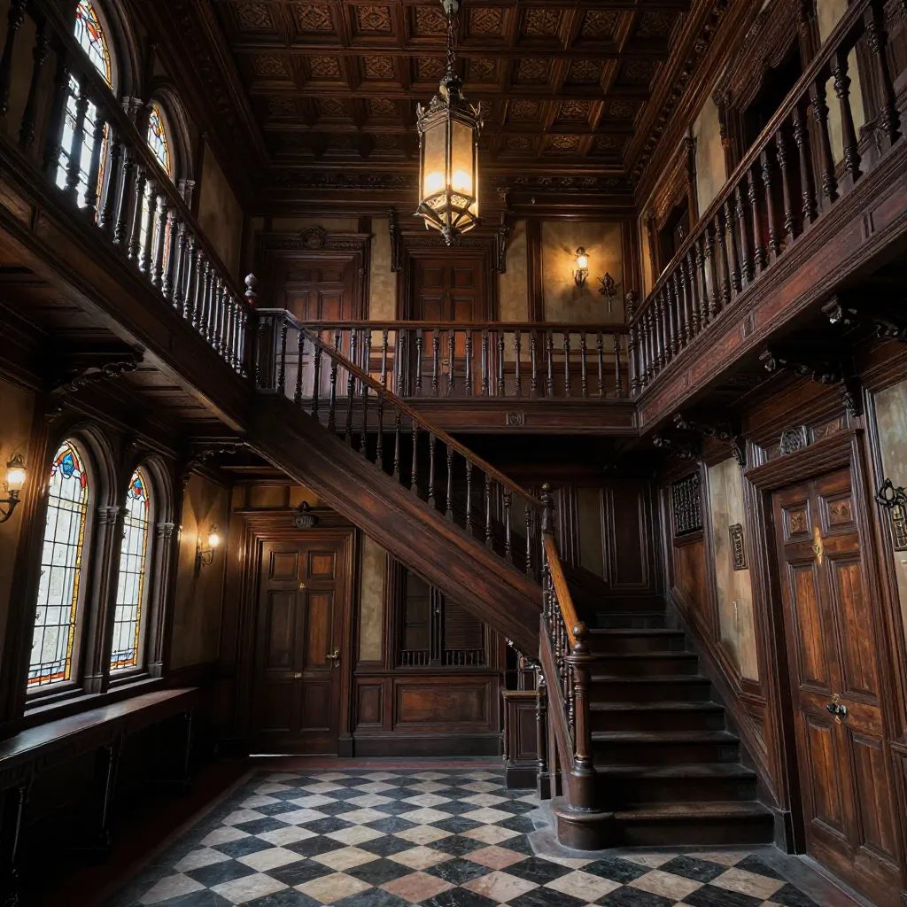
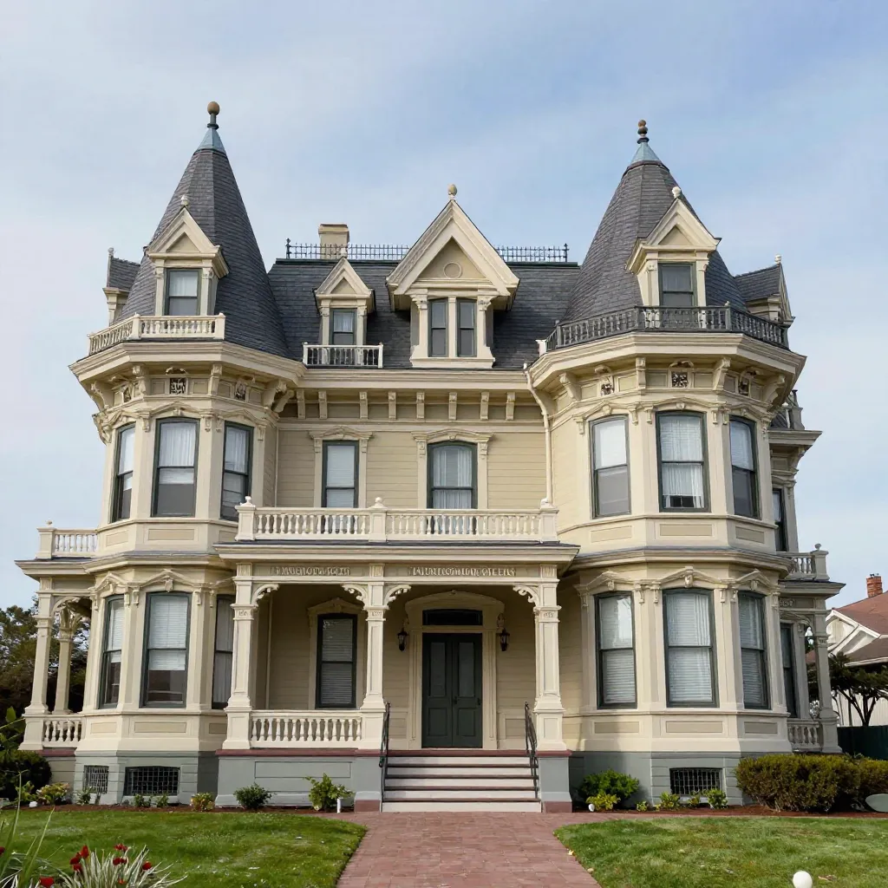

The Sarah Winchester House: 38 Years of Endless Construction and the Ghosts of the Rifle Fortune

The Winchester Mystery House in San Jose, California. For 38 years, construction never stopped. Was Sarah Winchester building to appease the dead — or simply channeling her grief into architecture?
In 1884, a small, veiled woman dressed entirely in black arrived in San Jose, California, and purchased an unfinished eight-room farmhouse on 162 acres of orchard land. Her name was Sarah Lockwood Winchester, and she was the widow of William Wirt Winchester, treasurer of the Winchester Repeating Arms Company — the manufacturer of the rifle that was, as its advertising boasted, "the gun that won the West." Sarah had inherited a fortune worth roughly $20 million (equivalent to over half a billion dollars today), plus a daily income of approximately $1,000 per day in royalties from Winchester rifle sales. She was one of the wealthiest women in America. She was also one of the most grief-stricken. Her infant daughter, Annie Pardee Winchester, had died in 1866 at just six weeks old. Her husband had died in 1881 of tuberculosis. And according to a legend that may or may not be true, Sarah had visited a Boston medium who told her that she was cursed by the spirits of every person ever killed by a Winchester rifle, and that the only way to survive was to move west and build a house continuously, never stopping, for as long as she lived. If construction ever ceased, the spirits would claim her. What followed was one of the strangest building projects in American history — a construction frenzy that lasted 38 years, 24 hours a day, 365 days a year, producing a mansion so bizarre that it has captivated ghost hunters, architects, and curiosity seekers for over a century.
The Winchester Mystery House, as it is now known, is a labyrinth of architectural absurdity. It contains 160 rooms (at final count), including staircases that lead to ceilings, doors that open onto multi-story drops, windows set into floors, rooms built within rooms, secret passages, and a chimney that rises 17 stories but stops just short of the roof. It is also, depending on whom you believe, either the product of a grief-maddened woman trying to appease vengeful spirits — or a remarkably creative and misunderstood woman whose eccentricities were exaggerated after her death to sell tickets. The truth, as usual, is more complicated and more interesting than the legend.
The Rifle Fortune and the Weight of Grief
Sarah Lockwood Pardee was born on June 4, 1839, in New Haven, Connecticut, the fifth child of a modest family. She married William Wirt Winchester in 1862, during the height of the American Civil War — a conflict that made the Winchester Repeating Arms Company enormously wealthy. The Winchester rifle was one of the most lethal weapons of the 19th century, capable of firing multiple rounds without reloading. It became the firearm of choice for settlers, soldiers, and hunters across the American frontier. Oliver Winchester, William's father, built the company into an industrial powerhouse, and by the time of his death in 1880, the family was fabulously rich.
But the Winchester fortune came at a terrible personal cost. Sarah's only child, Annie Pardee Winchester, was born on June 15, 1866, and died on July 24, 1866 — just six weeks old. The cause was marasmus, a form of severe malnutrition often linked to underlying illness. Sarah was devastated. She never had another child. Then, in 1881, her husband William died of tuberculosis at the age of 43. In the span of 15 years, Sarah had lost her daughter and her husband. She inherited roughly $20 million and 50 percent of the Winchester Repeating Arms Company's stock, making her one of the wealthiest women in the world — and one of the loneliest.
According to the popular legend — first published in an 1897 article in the San Francisco Chronicle and greatly elaborated in later accounts — Sarah traveled to Boston after William's death and consulted a spiritualist medium. The medium allegedly told her that the Winchester family was cursed, haunted by the spirits of every person killed by Winchester rifles. Sarah's daughter and husband, the medium said, were victims of this curse. The only way to appease the spirits and survive was to move west and build a house that would never be finished. Construction had to continue without pause, night and day, for as long as Sarah lived. If it stopped, she would die. Sarah, according to this story, moved to California and began building — and never stopped for 38 years.
💰 The Winchester Fortune: Wealth Beyond Imagination
When William Wirt Winchester died in 1881, Sarah inherited an estate valued at approximately $20 million (roughly $550 million in today's dollars), plus a daily income estimated at $1,000 per day from Winchester rifle royalties. That daily income alone would be worth roughly $30,000 per day today. She used this immense wealth to fund continuous construction on the San Jose mansion for 38 years. She paid her carpenters three times the going rate — wages so generous that workers competed fiercely for positions on the Winchester crew. The construction employed a rotating shift of approximately 16 carpenters working around the clock, along with plumbers, electricians, plasterers, gardeners, and servants. The annual construction budget has been estimated at $5 million in today's dollars. Sarah bought only the finest materials: Tiffany stained glass windows (some costing thousands of dollars each), imported English and European woodwork, silver and gold plumbing fixtures, and custom hardware. She installed modern conveniences including electricity, gas lighting, elevators, and modern plumbing — decades before most American homes had them. The house was, in many ways, a showcase of cutting-edge residential technology hidden behind a facade of apparent madness.

A staircase in the Winchester Mystery House that climbs directly into the ceiling. Sarah Winchester reportedly ordered construction changes daily, sometimes sealing off rooms entirely.
A House That Built Itself: The Architecture of Chaos
What makes the Winchester Mystery House genuinely extraordinary is not the ghost story attached to it but the building itself. Over 38 years of continuous construction, Sarah Winchester created a structure so architecturally bizarre that it defies easy description. She had no master plan, no overall blueprint, and apparently no final goal. She drew designs on scraps of paper, napkins, or brown paper and handed them to her carpenters to build. Rooms were added, demolished, and rebuilt. Wings were extended and then sealed off. Entire sections were constructed and then plastered over the next day. The result is a mansion that is simultaneously impressive and incomprehensible.
The final house contained approximately 160 rooms, though estimates vary because Sarah continually built and demolished rooms throughout the construction. An estimated 500 to 600 rooms were built and demolished over the 38-year period. The house as it exists today includes:
- 160 rooms (at final count), including 40 bedrooms, 2 ballrooms, 47 fireplaces, 10,000 windows, 2,000 doors, 17 chimneys (one rising 17 stories but never reaching a fireplace), and 9 basements
- Staircases leading nowhere — including the famous staircase that rises to a ceiling, with steps that are only two inches high, and another that leads directly into a wall
- Doors opening to nothing — several doors open onto multi-story drops, including one that opens onto a two-story fall; other doors open into walls or closets
- Windows in floors and ceilings — Sarah installed windows in the floors of some rooms, allowing light to filter through from above or below
- Secret passages and spy holes — corridors hidden behind cabinets, doors concealed in walls, and peepholes that allowed Sarah to observe rooms without being seen
- The famous seance room — a windowless room with a single entrance and multiple exits, where Sarah reportedly communicated with spirits every midnight
👳 The Number 13: Obsession or Coincidence?
One of the most persistent features of the Winchester Mystery House legend is Sarah's alleged obsession with the number 13. Tour guides have long pointed out that the house contains 13 bathrooms, staircases with 13 steps, windows with 13 panes, chandeliers modified to hold 13 bulbs, rooms with 13 coat hooks, and 13 drain holes in the sink of the seance room. The 13th bathroom has an exit but no entrance. The chandelier in the ballroom originally held 12 candles but was modified to hold 13. A section of the Ornamental Glass Window has 13 stones. Sarah's will was divided into 13 sections and signed 13 times. Whether this obsession was genuine or a post-hoc invention of tour guides has been debated. Some researchers have noted that many of the "13" features can be found in other Victorian homes of the period and may not be statistically unusual. Others argue that the sheer number of 13-related features — far more than would occur by chance — suggests deliberate design. Regardless of the explanation, the number 13 has become an inseparable part of the Winchester Mystery House mythology, as ingrained in the house's identity as the legends surrounding the Bermuda Triangle or the ghostly tales of the Tower of London.
The 1906 Earthquake: The Night the House Fought Back
On April 18, 1906, the great San Francisco earthquake struck, estimated at magnitude 7.9 — one of the most powerful earthquakes in American history. The Winchester Mystery House was violently shaken. The top three floors of the seven-story tower collapsed, crashing into the gardens below. Several rooms were destroyed, and the famous Daisy Room (named for the daisy-patterned wallpaper) was badly damaged. Sarah, who was reportedly in the Daisy Room when the earthquake struck, was trapped inside for several hours before servants could reach her.
The earthquake had a profound effect on Sarah. She interpreted it, according to legend, as a sign that the spirits were displeased with the house's grandeur. After the quake, she ordered the front rooms of the mansion boarded up and never entered them again. The front wing of the house — including the grand entrance hall and several reception rooms — was essentially sealed, remaining untouched until Sarah's death in 1922. The collapse of the tower also meant that the house would never again reach its maximum height. What had been a seven-story tower became a four-story structure, and the mansion's profile was permanently altered.

The Winchester Mystery House as it appears today — a labyrinth of 160 rooms built over 38 years of continuous construction that only stopped when Sarah Winchester died in 1922.
Madwoman or Genius? The Real Sarah Winchester
The legend of Sarah Winchester as a guilt-ridden, spirit-obsessed madwoman is compelling — but it may be largely fiction. Modern historians and researchers have challenged almost every element of the popular narrative. The Wikipedia article on Sarah Winchester notes that "there is no evidence" for the rumors that she built the house to trap spirits, and that "testimonies and records from those who knew her describe her as intelligent, kind, a savvy financial manager, and not superstitious, remaining sharp-witted even into old age." Mary Jo Ignoffo, author of Captive of the Labyrinth, the most thorough scholarly biography of Sarah Winchester, found no evidence that Sarah ever visited a Boston medium, that she believed she was cursed, or that she built the house to appease spirits.
The legend appears to have originated in an 1897 article in the San Francisco Chronicle, which described Sarah's endless construction project and speculated about its purpose. The story was dramatically embellished after Sarah's death in 1922, when the house was sold to a group of investors who immediately began promoting it as a tourist attraction. The ghost story was a marketing tool — a way to sell tickets to a Victorian mansion that was unusual but not, on its own, necessarily supernatural. Over the decades, the legend grew. Each retelling added new details: the seance room became more elaborate, the number 13 obsession became more pronounced, and Sarah became progressively more "mad" in the telling.
The Skeptical View
Several alternative explanations have been proposed for the house's bizarre architecture:
- Queen Anne Victorian style — Many features of the house that appear bizarre to modern eyes were actually common in Queen Anne Victorian architecture, including asymmetrical facades, multiple chimneys, and unusual window placements. Sarah may have been building in a style that was fashionable, not mad.
- Continuous renovation as hobby — Sarah was a wealthy woman with no family and no professional obligations. Continuous building may have been her creative outlet — a way to fill her days and exercise her imagination, much like a wealthy person today might continuously remodel a home.
- Earthquake damage and ad hoc repairs — The 1906 earthquake caused massive damage to the house. Many of the architectural oddities — staircases leading nowhere, doors opening to drops, rooms sealed off — may be the result of hasty repairs and improvisational reconstruction after the earthquake, not deliberate design.
- Post-hoc mythologizing — The legend was created by tour operators after Sarah's death. The "seance room" may have been a storage room. The "13 obsession" may be a pattern found by guides looking for it. The "Boston medium" may never have existed.
👻 Ghost Hunters and the Paranormal
The Winchester Mystery House has been a magnet for ghost hunters and paranormal investigators since it opened to the public in 1923. Visitors have reported cold spots, footsteps in empty rooms, voices, and the sensation of being watched. Some have claimed to see apparitions — a woman in white, a workman in old-fashioned clothes, a dark figure in the seance room. The house has been featured on numerous paranormal television shows, including Ghost Adventures, Ghost Hunters, and Most Haunted. In 2019, the house was the subject of a major Hollywood film, Winchester, starring Helen Mirren as Sarah. But despite decades of investigation, no credible evidence of paranormal activity has ever been documented at the house. Cold spots can be explained by the house's 47 fireplaces and outdated heating system. Footsteps can be explained by settling wood and visiting tourists. Voices can be explained by the house's peculiar acoustics, which carry sound from one room to another through hidden passages and ventilation shafts. The house is strange, certainly, but "strange" is not the same as "haunted." The ghost stories surrounding the Winchester Mystery House are not unlike the famous legends of the Amityville Horror, where investigation revealed that the supernatural claims were greatly exaggerated, or the mysterious disappearance celebrated in the Mary Celeste legend, where reality proved less dramatic than the myth.
🏢 A House of Mirrors for the Soul
The Winchester Mystery House is a mirror in which every generation sees what it wants to see. To ghost hunters, it is a haunted mansion built by a madwoman to trap spirits. To architects, it is a fascinating example of ad hoc, additive construction — a building with no plan and no end. To feminists, it is a story about how a brilliant, wealthy, independent woman was recast as insane by a culture that could not accept female autonomy. To historians, it is a cautionary tale about the power of legend to overwhelm fact. The real Sarah Winchester was probably none of the things the legend claims. She was not mad. She was not haunted. She was a grieving woman with more money than she could spend and a penchant for building. The house she created is strange, beautiful, and deeply human — the product of 38 years of continuous, purposeful work by a woman who had lost everything that mattered to her and channeled her grief into wood, glass, and stone. The Winchester Mystery House has been a tourist attraction since 1923 and was designated a California Historical Landmark. It draws over 100,000 visitors annually. Whether you see it as a monument to madness, a masterpiece of eccentric architecture, or a brilliant woman's lifelong art project, one thing is certain: there is nothing else like it on Earth. The house, like the vanishing colonists of Roanoke, the eerie abandoned lighthouse of Flannan Isle, and the hysterical dancing of the 1518 Dancing Plague, remains one of those mysteries that resists final explanation — and is all the more compelling for it.
Frequently Asked Questions
Who was Sarah Winchester?
Sarah Lockwood Winchester (1839-1922) was the widow of William Wirt Winchester, treasurer of the Winchester Repeating Arms Company. After the deaths of her infant daughter in 1866 and her husband in 1881, she inherited a fortune of approximately $20 million and moved to San Jose, California, where she began a continuous construction project on her mansion that lasted 38 years until her death in 1922. Modern historians describe her as intelligent, kind, and a savvy financial manager — not the madwoman of popular legend.
Why did Sarah Winchester build continuously for 38 years?
The popular legend claims that a Boston medium told Sarah she was cursed by the spirits of those killed by Winchester rifles and must build continuously to appease them. However, no evidence supports this story. Historian Mary Jo Ignoffo found no record of Sarah visiting a medium or believing she was cursed. The continuous construction may have been a creative hobby, an architectural experiment, or simply the pastime of a wealthy, lonely woman with unlimited resources.
How many rooms does the Winchester Mystery House have?
The house as it exists today contains approximately 160 rooms, including 40 bedrooms, 2 ballrooms, 47 fireplaces, 10,000 windows, and 2,000 doors. An estimated 500 to 600 rooms were built and demolished over the 38-year construction period. The house also includes 17 chimneys (one rising 17 stories), 9 basements, and numerous architectural oddities such as staircases leading to ceilings and doors opening to multi-story drops.
Is the Winchester Mystery House haunted?
Despite decades of ghost hunting and paranormal investigation, no credible evidence of supernatural activity has ever been documented at the Winchester Mystery House. The ghost stories originated as marketing material after Sarah's death in 1922, when the house was converted into a tourist attraction. Reported phenomena — cold spots, footsteps, voices — can be explained by the house's age, construction, and unusual acoustics. The house is strange and architecturally unique, but "strange" does not mean "haunted."
📖 Recommended Reading
Want to learn more? Check out Captive of the Labyrinth by Mary Jo Ignoffo on Amazon for a deeper dive into this fascinating topic. (As an Amazon Associate, we earn from qualifying purchases.)
References & Further Reading
- Wikipedia: Sarah Winchester — Biography of the heiress, covering her early life, marriage, inheritance, and the construction of the Winchester Mystery House
- Wikipedia: Winchester Mystery House — Detailed article on the mansion's architecture, history, and cultural impact
- Wikipedia: Winchester Repeating Arms Company — The company that generated the Winchester fortune and the "curse" legend
- Wikipedia: 1906 San Francisco Earthquake — The earthquake that collapsed the Winchester mansion's tower and trapped Sarah in the Daisy Room
- Wikipedia: Spiritualism — The religious movement that provided the context for the Boston medium legend
- Wikipedia: Queen Anne Style Architecture — The architectural style that may explain many of the house's supposedly "bizarre" features
Editorial note: reconstructions are continuously revised as imaging and inscription studies improve. See our Editorial Policy.